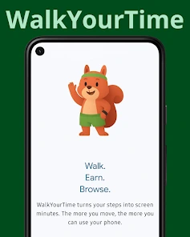
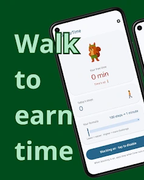
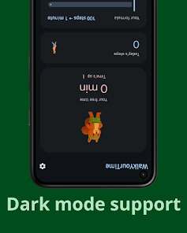
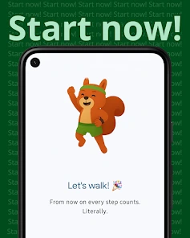

WalkYourTime
WalkYourTime is an innovative app that lets you transform your daily steps into screen time for your smartphone. This helps you take back control of your time on the phone.
Features
Lightweight
Optimized to run smoothly without draining your battery.
Privacy Friendly
Your data stays on your device. No tracking, no analytics.
100% Offline
Works perfectly without an internet connection.
Open Source
Transparent codebase, fully auditable by the community.
Modern Tech
Built with the newest Android technologies (M3 Expressive, Jetpack Compose).
Wide Compatibility
Tested and compatible with over 17,000 different Android devices.
How to Use
- Download & Install: Get the app from the Play Store or GitHub Releases.
- Grant Permissions: Allow the necessary physical activity permissions when prompted.
- Customize: Set your preferred steps-to-minutes conversion ratio in the settings.
- Go about your day: Your steps are silently converted into usable screen time minutes.
- Phone locked? Just go for a walk to earn more time!
Project Timeline
Version codenames are in Italian, honoring the project's origins.
Official Launch
Initial public release of the app.
Refinements
Translation fixes and rebalancing of the step/minute ratio bar.
Engine Rewrite
Rewrote the app detection engine for better efficiency and implemented different app categories.
Credits & Polish
Added the credits screen and ongoing minor improvements.
UI/UX Overhaul
Fix onboarding. Add language, theme, and color selector support. Redesigned icon with dynamic color support and true OLED black theme.
Wearable Integration
v2.0: Add Health Connect support for smartwatch step counting. v2.1-v2.2: Support for additional third-party services.
Parental Control
PIN protection to disable the app or change settings, allowing parents to configure limits for their children. Exploring anti-uninstall measures. Moving the disable toggle to settings with a confirmation dialog.
Advanced Android Features
Dynamic notifications (Android 16+), Now Bar support, home screen widgets, and other secondary improvements.
Installation
Screenshots




Tech Stack
Contributing
Found a bug or have a feature request? Feel free to open an issue on the GitHub repository. If you want to discuss the project directly or need help, you can always reach out via the Contacts page.
License
This project is licensed under the GNU General Public License v3.0. See the LICENSE file in the repository for details.